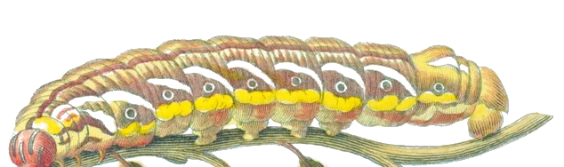
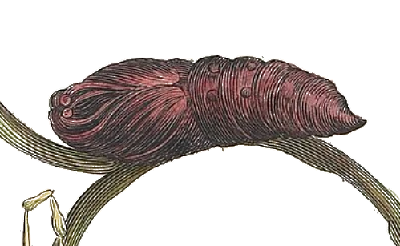
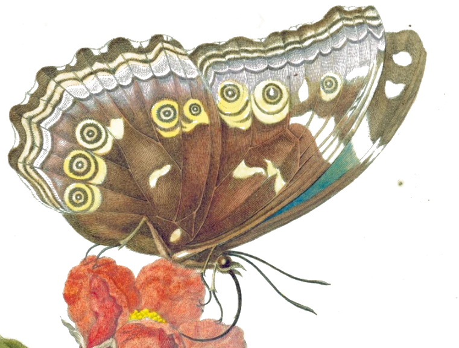
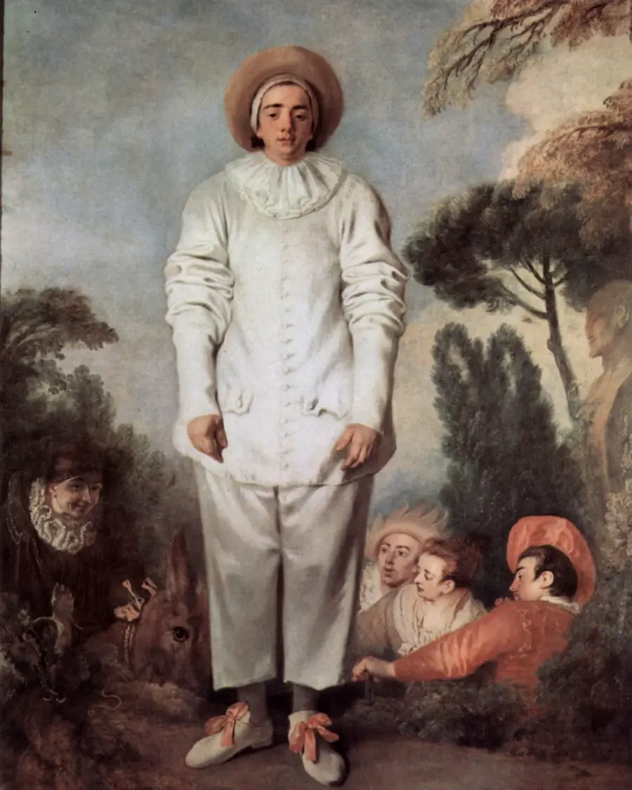
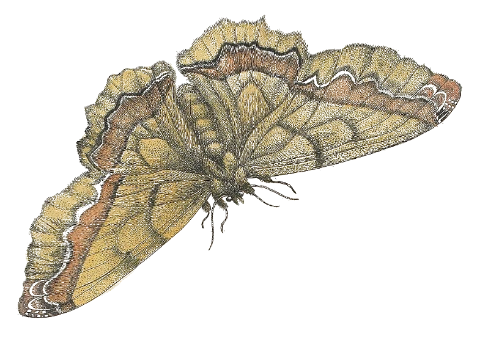
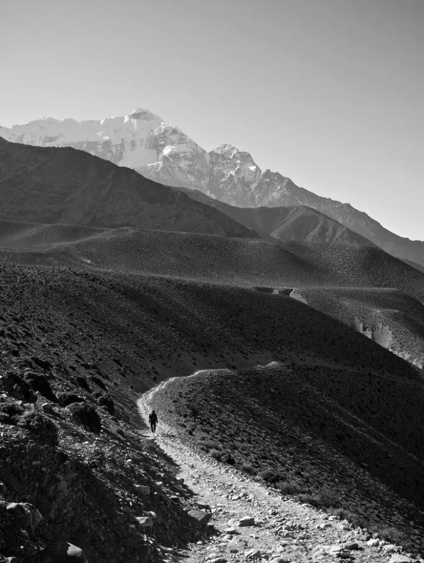
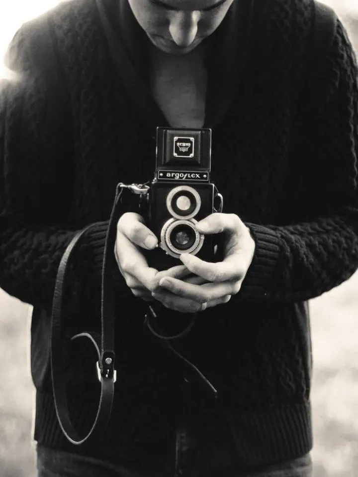
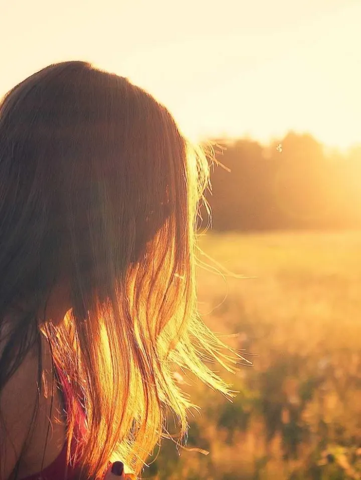
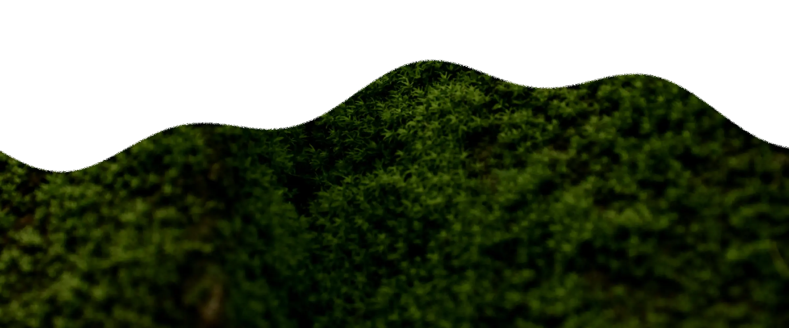

Актёры и актрисы
люди, которые проходят свой путь
12 из 12
Под такой запрос никого нет.
Актёры вымышленные: имена, параметры, фильмография и занятость — для примера. Фото временные, со стока (Unsplash) — сюда встанут настоящие
Талант требует пространства
Мы помогаем актёрам проходить свой путь — очищать, искать, расти и находить новые смыслы.
Мы — пространство для тех, кто находится в движении. Мы верим в развитие, в новые истории и в силу перемен.
Таблица превращения по гравюрам Марии Сибиллы Мериан
-

Очищать Убираем лишнее: чужие ожидания, случайные роли, штампы, которые мешают увидеть артиста.
Табл. Iгусеница -

Искать Ведём базу проектов и держим связь с кастинг-директорами площадок, а не ждём общей рассылки.
Табл. IIкуколка -

Расти Самопробы, речь, пластика, работа с камерой — и честный разбор каждой пробы, даже непройденной.
Табл. IIIбабочка
Описания принципов и условия для актёров — черновик, перепишем вашими словами. Остальные фразы — с мудборда

Актёрам
В каждом человеке есть больше, чем кажется
Хотите в агентство? Пришлите три снимка без ретуши, шоурил до двух минут и пару слов о себе. Отвечаем каждому, даже если сейчас не можем взять.

Проекты
истории, в которых наши актёры становятся ближе к себе
-

«Вне времени»
Главная женская роль — Дарья Смирнова. Ещё четверо актёров агентства в составе.
-

«Грани»
Режиссёр А. Долин. Иван Соколов и Дарья Смирнова — в основном составе.
-

«Тишина»
Конкурсная программа фестиваля «Короче». Полностью наш каст.
Проекты вымышленные — заменим на реальную фильмографию

Контакты
Мы всегда открыты к новым историям, проектам и встречам.
- Почта
- hello@chistilishe.agency
- Телефон
- +7 900 000 00 00
- Телеграм
- @chistilishe
Люди · Истории · Возможности
Почта, телефон и телеграм — заглушки. Нужны настоящие